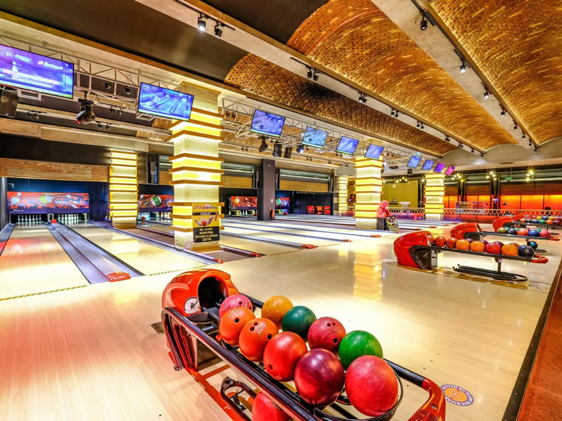
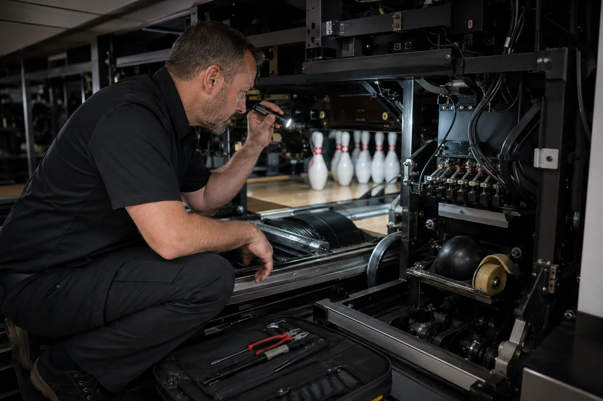
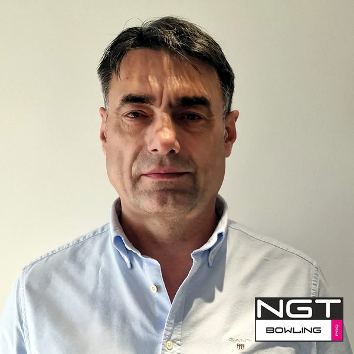

Cum transform spațiul într-un flux care funcționează?
Pistele, recepția, zona socială și accesul tehnic sunt analizate ca un singur traseu — pentru clienți și pentru echipă.
De la prima schiță la primul strike — proiectare, echipare, instalare și suport tehnic într-un singur sistem.
Cumperi un sistem comercial în care experiența clientului, operarea și suportul tehnic trebuie să lucreze împreună.
Pistele, recepția, zona socială și accesul tehnic sunt analizate ca un singur traseu — pentru clienți și pentru echipă.
Scoringul, formatele de joc și atmosfera creează contexte diferite pentru familii, grupuri și evenimente.
O configurație coerentă, personal instruit și proceduri clare reduc improvizația din operarea zilnică.
Service-ul, piesele și mentenanța sunt gândite din etapa de proiect, nu după prima oprire.
Primești o soluție integrată și un traseu clar: analiză, ofertă, proiectare, instalare, punere în funcțiune și suport.
Nu îți cerem să alegi singur echipamentele. Prima analiză transformă ideea într-un set de decizii pe care le putem discuta concret.
Nu primești doar componente. Primești un traseu tehnic coerent, adaptat etapei în care se află proiectul.
Analizăm spațiul, fluxurile și modul de utilizare înainte de alegerea sistemului.
Coordonăm configurația tehnică și instalarea până la punerea în funcțiune.
Actualizăm mecanica, scoringul sau atmosfera fără reconstruirea inutilă a întregului centru.
Sistemele de joc și afișare susțin contexte diferite pentru public și operator.
Diagnostic, intervenții și componente compatibile pentru continuitatea operării.
Spune-ne ce spațiu ai și în ce etapă te afli. Pregătim contextul pentru discuția tehnică.
Începe analiza ↗În spatele experienței există un ansamblu care trebuie să pornească, să comunice și să reziste în fiecare zi.
Valoarea nu stă într-o animație de strike, ci în felul în care aceeași locație poate găzdui contexte diferite pe parcursul săptămânii.
Timp petrecut împreună, aniversări și activități indoor ușor de înțeles.
Joc social, competiție și un motiv clar pentru întâlniri repetate.
Formate pentru echipe, seri private și activări de companie.
O destinație indoor care poate prelungi timpul petrecut în locație.
Scoringul, jocurile și configurarea sesiunilor permit experiențe diferite fără schimbarea infrastructurii.
Pistele de bowling pot fi proiectate și instalate în fiecare dintre aceste tipuri de locații, într-o configurație adaptată spațiului, publicului și modului de operare.
Pistele completează mixul de activități și le oferă grupurilor un motiv în plus să rămână în locație.
Bowlingul adaugă o activitate ușor de integrat în petreceri, team-building-uri și evenimente private.
Pistele creează o opțiune de agrement indoor pentru oaspeți și extind experiența dincolo de cazare.
O zonă comună de bowling poate diferenția proiectul și oferă rezidenților un spațiu social utilizabil tot anul.
O configurație compactă poate transforma o cameră dedicată într-o experiență de entertainment privată.
Într-un pavilion acoperit, bowlingul adaugă o atracție independentă de vreme și de sezon.
Pistele diversifică oferta unei destinații și adaugă o experiență participativă pentru grupuri.
Bowlingul poate combina masa cu o activitate socială și creează un motiv suplimentar pentru rezervări de grup.
Pistele adaugă competiție socială și pot susține seri tematice, ligi sau evenimente private.
BowlingTech poate analiza planul, accesul și fluxurile pentru a stabili dacă spațiul susține o configurație potrivită.
Dimensiunile, structura, accesul și cerințele de operare determină soluția potrivită pentru fiecare spațiu.
Nu calculăm un preț automat și nu te obligăm să completezi un formular lung. Pregătim contextul pentru o discuție tehnică pe WhatsApp.
Folosim imaginile și informațiile deja publicate. Selectează un punct pentru a vedea unul dintre cele șase proiecte documentate vizual.

Proiect de capacitate mare pentru trafic intens și operare zilnică.
Predarea nu încheie relația tehnică. Punerea în funcțiune, instruirea și intervențiile ulterioare fac parte din continuitatea proiectului.
Verificarea integrată a pistelor, mecanicii, scoringului și elementelor de operare.
Rutine zilnice, verificări de bază și reacție la situațiile uzuale.
Un ritm de verificare care urmărește funcționarea constantă, nu doar reparația.
Identificarea problemei și stabilirea celui mai potrivit tip de intervenție.
Acces la componente potrivite sistemelor instalate și istoricului tehnic.
Modernizarea mecanicii, scoringului sau atmosferei fără refacerea întregului centru.

Vizual conceptual / suport tehnicȘtii ce trebuie verificat, pe cine contactezi și cum poate evolua sistemul. Astfel, suportul devine parte din modul de operare, nu o promisiune generică din footer.

Analiza, instalarea și relația de după deschidere sunt tratate ca părți ale aceluiași proiect.